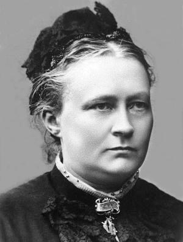

Minna Canth
Yksityisessä kodissa näkyvät yhteiskunnan valtasuhteet.
Canth tuo esiin ihmisten tarpeet tilanteissa, joissa raha, sukupuoli ja maine rajoittavat valinnanvapautta.
Etsi teokset kirjastostaElämä ja teokset
Minna Canth syntyi Tampereella ja teki keskeisen elämäntyönsä Kuopiossa. Kirjoittamisen ja lehtityön rinnalla hän hoiti kauppaliikettä. Hänen kotinsa Kanttila oli kirjallisten ja yhteiskunnallisten keskustelujen kohtauspaikka.
Työmiehen vaimo ilmestyi vuonna 1885 ja Agnes vuonna 1892. Anna Liisa ja Kotoa pois ovat vuodelta 1895. Canth käsitteli teoksissaan toimeentuloa, naisten asemaa ja vastuuta tavalla, joka haastoi aikansa totuttuja käsityksiä.
Tyyli ja teemat
Vuoropuhelu paljastaa, kuka saa määritellä tilanteen ja kenen kokemus jää sivuun. Canth ei irrota sisäistä ristiriitaa ulkoisista oloista. Myös hiljaisuus, taloudellinen riippuvuus ja pelko muiden tuomiosta voivat ohjata toimintaa.
Tasa-arvo · Vastuu · Toimeentulo
Aloita tästä
Työmiehen vaimo
Johannan avioliitto tekee rahan ja vallan epätasaisen jakautumisen näkyväksi. Näytelmässä yksityinen kohtalo kytkeytyy yhteisiin sääntöihin.
Agnes
Kahden naisen kohtaaminen avaa erilaisia käsityksiä rakkaudesta, kodista ja itsenäisyydestä. Kertojan arvioihin kannattaa suhtautua tarkkaavaisesti.
Anna Liisa; Kotoa pois
Samassa niteessä kaksi näytelmää. Anna Liisa käsittelee salaisuutta ja vastuuta, Kotoa pois kodin ja oman elämän välistä jännitettä.
Lue kohtaus myös niiden henkilöiden kannalta, joilla on siinä vähiten mahdollisuuksia sanoa vastaan.